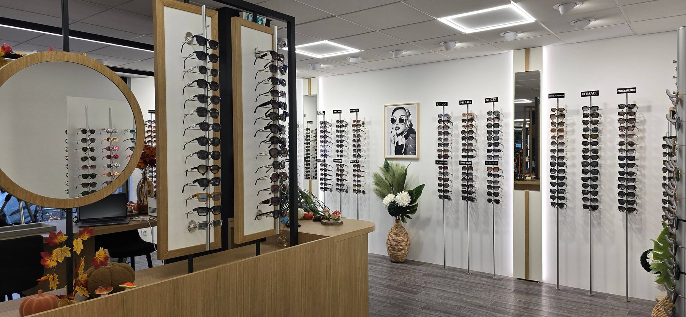
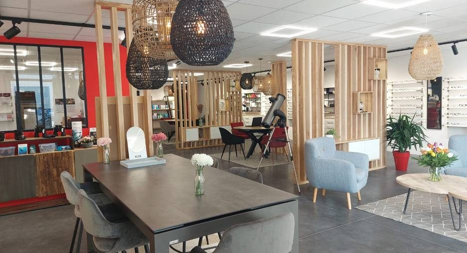
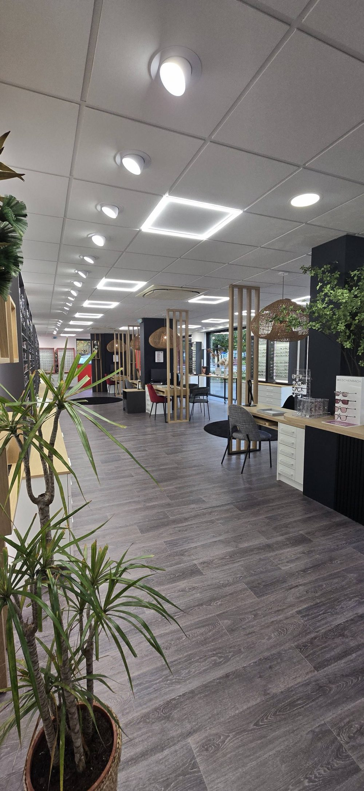
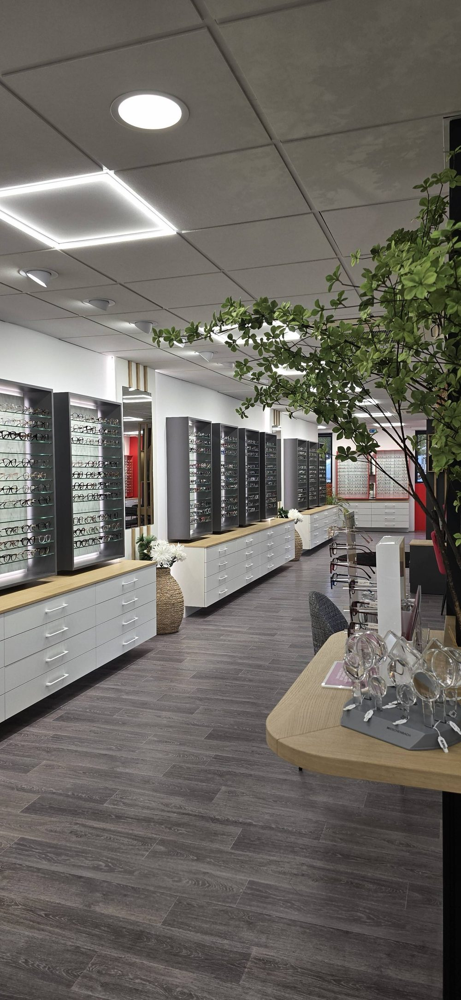
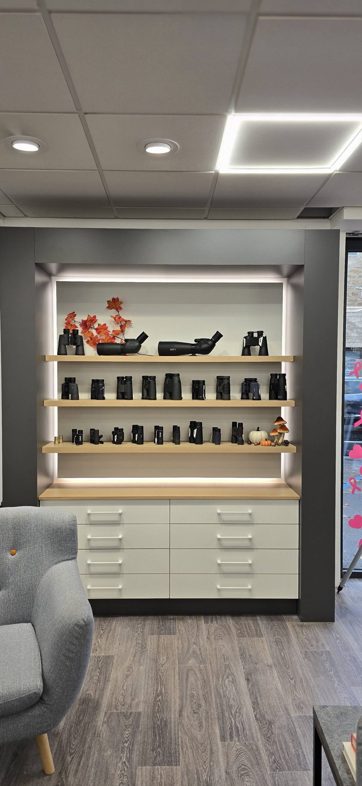
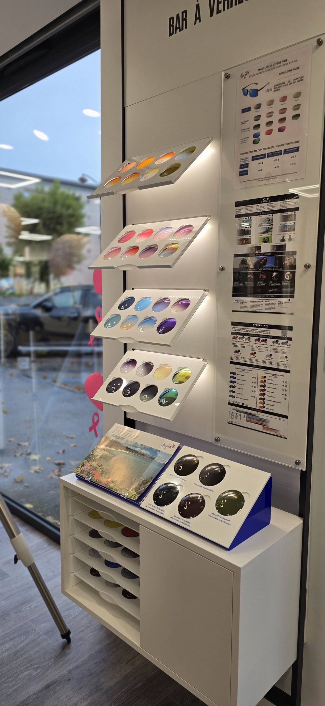

Des royalties légères
Nous ne prélevons pas l'essentiel du chiffre d'affaires. La marge reste là où elle est créée, dans le magasin.
Une franchise pour les opticiens qui veulent une marque, de meilleurs prix d'achat et un vrai accompagnement, sans abandonner leur entreprise.

Un réseau réussit quand ses magasins réussissent. Notre intérêt est que le franchisé gagne bien sa vie, pas que le réseau prélève le plus possible.
Nos franchisés sont des indépendants, et ils le restent.
Libre, mais seul face aux achats, à la gestion et à la communication.
Entouré, mais avec une part importante de la marge reversée au réseau.
La marque, les achats et le suivi d'un groupe, avec la marge qui reste dans le magasin.
Nous ne prélevons pas l'essentiel du chiffre d'affaires. La marge reste là où elle est créée, dans le magasin.
Le volume du groupe permet de négocier mieux. Le franchisé paie moins cher ce qu'il vend et ce dont il a besoin.
Ouverture, gestion, achats, communication : notre rôle est de faire gagner du temps et d'éviter les erreurs.
Le franchisé décide de son équipe, de son organisation et de la vie de son magasin.
L'expérience du premier magasin l'a montré : les stocks doivent être visibles de tout le réseau, et cela suppose le même logiciel pour tous. C'est la seule liberté que nous retirons.
Nous avons ouvert le réseau avec ce que nous avons de plus proche. Ce choix en dit plus que n'importe quelle promesse sur la façon dont nous traitons un franchisé.
Le premier magasin en franchise, à Villars-les-Dombes, est porté par Émilie Gavoille, fille de Cécile Gavoille, cofondatrice du groupe, et par son associée Victoria Lebreux, salariée du groupe. Nous ne proposons pas à un franchisé ce que nous n'accepterions pas pour elle.
Ses retours de terrain, difficultés comprises, servent à corriger le concept et à choisir les bons outils avant l'arrivée des suivants.
Dès le premier magasin, Victoria, salariée du groupe, est associée à Émilie. D'autres salariés pourront à leur tour devenir franchisés, avec le même soutien, et compléter ce départ.
Dans bien des réseaux, la franchise sert d'abord à prélever : redevances élevées, marges conservées sur les achats, franchisé réduit à l'exécution. Chez GAVOILLE Opticiens, l'accompagnement est la raison d'être du réseau.
Notre famille est dans ce modèle. Il est fait pour que le franchisé réussisse.
Fondée en 2001 par Cécile et Frédéric Gavoille, l'entreprise s'est développée boutique après boutique, dans l'Ain et le Rhône.
Villars-les-Dombes est tenu par deux opticiennes formées dans l'équipe de Gleizé. Un nouveau point de vente ouvrira très prochainement ; nous l'annoncerons le moment venu.



Aider chaque porteur à bien voir et à bien se sentir dans ses lunettes, avec le conseil d'un opticien qui prend le temps.
Des boutiques à taille humaine, ancrées dans leur commune.
Un équipement choisi et adapté, pas une vente au volume.
Une entreprise familiale qui laisse aux franchisés la conduite de leur magasin.
Nous formons, accompagnons et aidons à reprendre ou transmettre un magasin.
Une communication factuelle, sans superlatifs ni promesses fragiles.
Une boutique GAVOILLE Opticiens couvre l'ensemble des besoins du porteur, avec un choix de marques négocié au niveau du groupe.


Le nom en entierToujours « GAVOILLE Opticiens ». Jamais « GAVOILLE » seul.
Un ton sobreFactuel, précis, sans superlatif. Aucune citation ni témoignage inventés.
Des supports cohérentsEnseigne, vitrine, documents commerciaux et réseaux sociaux suivent la même charte.
Nous avons développé un outil de calcul de rentabilité. Avant tout engagement, il met en regard la situation d'un opticien indépendant aujourd'hui et sa situation après le passage au réseau.
Nous recherchons des opticiens diplômés, ou des repreneurs entourés d'un opticien diplômé, attachés au conseil et à leur territoire.
GAVOILLE Opticiens · Jassans-Riottier